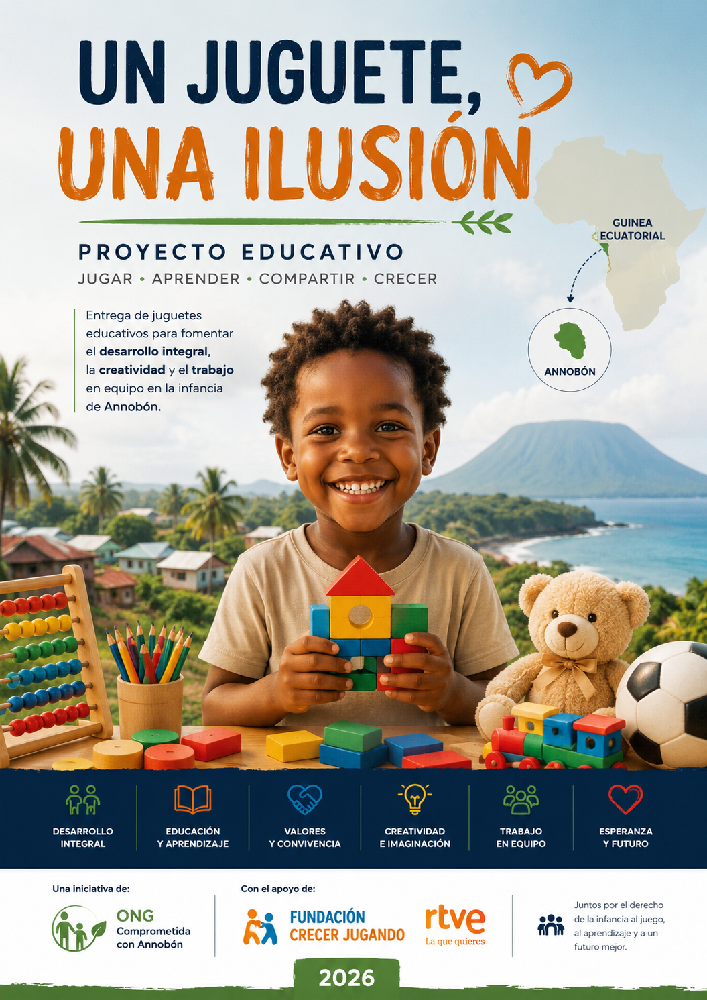

Un Juguete, una Ilusión
Una propuesta orientada a favorecer el desarrollo integral de la infancia de Annobón mediante el juego, la educación y la participación comunitaria.
Esta página presenta la candidatura de forma clara y accesible para personas, instituciones y entidades colaboradoras.

Resumen ejecutivo
Lugar
Annobón, República de Guinea Ecuatorial.
Finalidad
Contribuir al desarrollo integral de los niños y niñas mediante el juego como herramienta educativa.
Apoyo solicitado
Juguetes educativos y materiales de apoyo orientados al aprendizaje y la creatividad.
Enfoque
Educación, inclusión, creatividad, solidaridad y trabajo en equipo.
Sumario interno
Presentación del proyecto
El presente proyecto tiene como finalidad solicitar la colaboración de la campaña «Un Juguete, una Ilusión» para desarrollar una iniciativa educativa destinada a los niños y niñas de la isla de Annobón.
La propuesta parte de una idea sencilla pero esencial: el juego constituye una herramienta poderosa para el aprendizaje, la creatividad y el desarrollo personal.
Annobón: contexto y justificación
Annobón es la provincia insular más meridional de la República de Guinea Ecuatorial. Su condición insular hace que el acceso a recursos educativos, culturales y recreativos resulte más complejo.
Cada iniciativa de cooperación puede tener un impacto especialmente significativo para la infancia local.

Objetivos del proyecto
- Contribuir al desarrollo integral mediante el juego como herramienta educativa.
- Favorecer la imaginación, la creatividad y el pensamiento lógico.
- Reforzar la autoestima, la confianza y las habilidades sociales.
- Promover respeto, cooperación, solidaridad e inclusión.
Metodología educativa
La propuesta no se limita a la entrega de juguetes. Incluye actividades lúdicas y educativas que conviertan el material recibido en experiencias de aprendizaje compartido.
Las actividades pueden incluir juegos cooperativos, construcción, talleres creativos, actividades artísticas, lógica y trabajo en equipo.
Nuestra visión
Todos los niños merecen oportunidades para aprender, descubrir y desarrollar plenamente sus capacidades.
Nuestro compromiso
La iniciativa se desarrolla con responsabilidad, transparencia y respeto hacia la infancia.
Beneficiarios
El proyecto está dirigido prioritariamente a los niños y niñas residentes en la isla de Annobón.
Tipología de los juguetes solicitados
- Juegos de construcción.
- Juegos de lógica.
- Juegos de mesa educativos.
- Material creativo y artístico.
- Material deportivo infantil.
- Juegos musicales.
- Juegos cooperativos.
Organización y distribución
La distribución se planteará de forma ordenada y transparente, en coordinación con los responsables locales y la comunidad.
Impacto esperado y seguimiento
El proyecto pretende generar beneficios que perduren más allá del día de la distribución.
La gestión se orientará hacia la transparencia y la elaboración de una memoria final.
Pendiente de confirmación
Estas informaciones se mantendrán visibles para garantizar una presentación transparente.